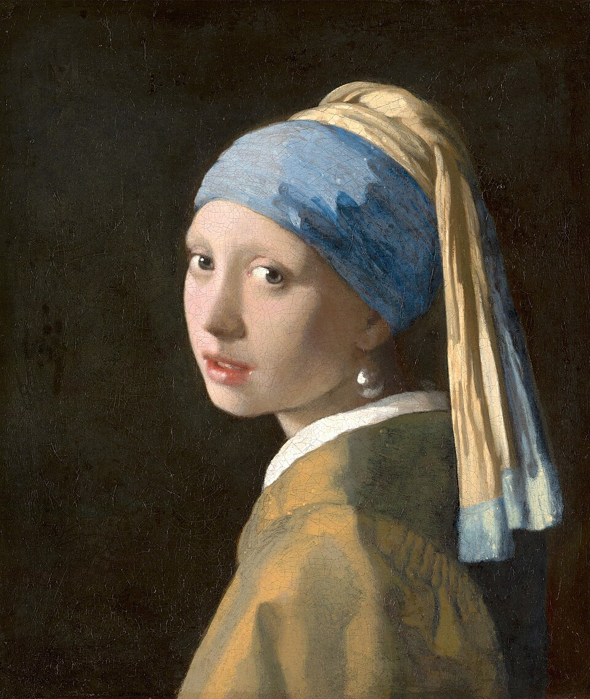

Nuestra colección
Una selección de obras de distintas épocas y estilos. Todas las imágenes son de dominio público.




Arte que se mira de cerca
Una selección de obras de distintas épocas y estilos. Todas las imágenes son de dominio público.
